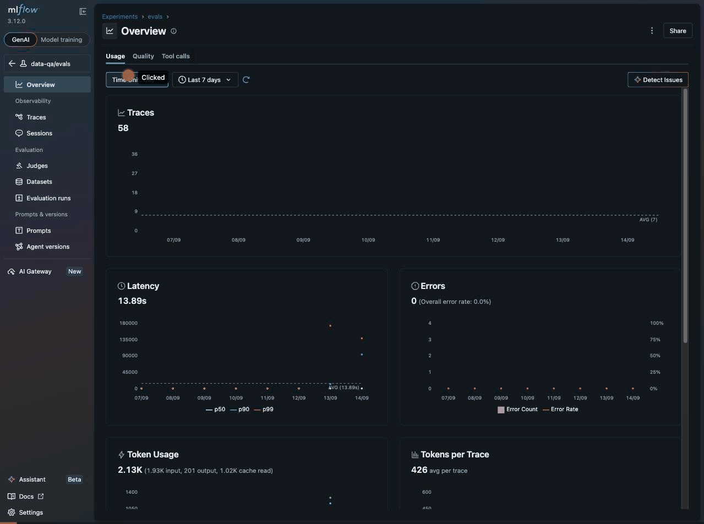
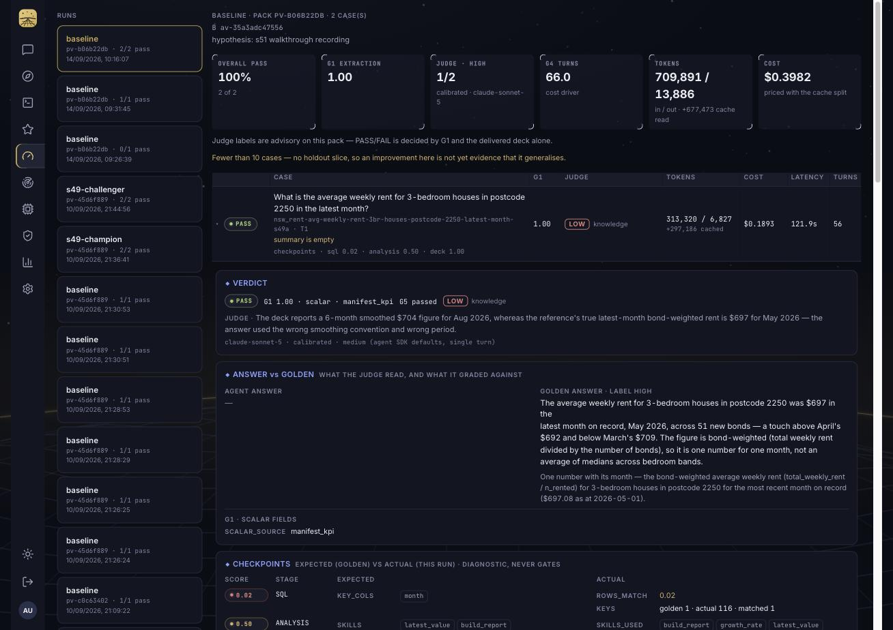

This page starts with a recording of the loop as it works today: a fresh make eval against the two s49 goldens, then the drill-down in MLflow from experiment → evaluation run → score → linked trace → the span for each governed tool the agent called. After the video, every change PR #43 made, grouped by the surface you would look at, and the gaps that are still open.
The run itself is a terminal command. Everything after it is the browser recording — 42 frames, real clicks, nothing staged. The step cards under the video say what each part of the recording is showing.

data-qa/evals. Traces and eval runs now live in the same experiment, which is what makes the rest of the path clickable.case · runs and one eval · run, with g1_score, g2, g3_format, judge_label, judge_calibrated and the three checkpoint columns.eval_run.py at grading time, so there is no time-window hunting.POST /ask (backend) → POST /agent/ask (data-agent) → agent_sdk.answer → initialize, tools/list, then alternating model.turn and tool.* children.claude-sonnet-5, tool_calls: mcp__dp__extract. Then tool.extract — the SQL, status success, row_count 5, frame df, 251 ms.skills_used: comparison_chart,build_report, skill_gaps 0, stdout_len 0.Cover; index 1 layout Ranked Bars, rows 5. This is the deck exactly as the agent specified it.The same trace the video opens, read back through get-trace-artifact. This is the evidence the judge, the checkpoints and the offline optimiser all consume — none of it is reconstructed from logs.
| Span | Duration | Attributes carried | Where it comes from |
|---|---|---|---|
| POST /ask | 139.60 s | http.*, user agent, route | backend-api (logfire FastAPI instrumentation) |
| POST /agent/ask | 139.41 s | same, inner service hop | data-agent — same trace id via propagated context |
| agent_sdk.answer | 139.40 s | runtime, fingerprint, question | sdk_agent.py root agent span |
| model.turn × 42 | point | turn, input_tokens, output_tokens, cache_read, cache_write, tool_calls, model | sdk_trace.py → otlp.emit_span per SDK message |
| tool.Read / Glob / Grep × 21 | point | path / pattern (knowledge reads under quota) | CLI built-ins observed via the PreToolUse hook |
| tool.extract | 0.25 s | sql, status success, row_count 5, frame df, ms 251 | sdk_agent.py:432 timed child_span |
| tool.run_analysis | 5.37 s | runtime pyodide, code_sha, status ok, skills_used, skill_gaps 0, stdout_len 0 | sdk_agent.py:461 + _analysis_rollup |
| tool.start_deck | 12.78 s | status ok (Slides copy from template pack) | sdk_agent.py:510 |
| tool.add_slide × 2 | 0.83 s · 5.40 s | index, layout Cover / Ranked Bars, chart_type, rows 0 / 5, has_kpi | sdk_agent.py:549; also persisted to query_runs.artifact_manifest |
| tools/call · initialize · tools/list | — | MCP protocol frames | SDK MCP client instrumentation |
Token accounting on this trace. Summing the 42 model.turn spans: 742,896 nominal input, of which 712,952 (96%) was cache read and 29,860 cache write; 276 output tokens. The Evaluations tab prices exactly that split ($0.2089 for this case). MLflow's own "Token count 419" in the trace header is not this — see open gaps.

Scalar grader, source manifest_kpi: the deck's KPI ($704) is within the 1% tolerance of the golden $697.08, and G5 found a delivered deck. Under D1 that alone decides PASS/FAIL.
"The deck reports a 6-month smoothed $704 figure for Aug 2026, whereas the reference's true latest-month bond-weighted rent is $697 for May 2026 — the answer used the wrong smoothing convention and wrong period." Stage diagnosis: knowledge. The agent's prose answer was empty, so the judge graded the deck.
Why this is not a bug to chase now. D2 made the judge advisory until the pack has 10 goldens, precisely so this kind of disagreement is visible without blocking promotion. The checkpoints agree with the judge: sql 0.02 (116 rows extracted vs the golden's 1), analysis 0.50 (used growth_rate, not just latest_value), deck 1.00. The fix path is a knowledge page on "latest month means the max month, not a smoothed window" — the reflector's job, or a curator edit through the Architecture tab.
data-qa/evals experiment — MLflow only links traces to runs inside one experiment.ParentBased head sampler drops GET /metrics, GET /health*, OPTIONS, /events roots. Store went from 282,699 root spans (57 real asks) to real traffic only; sqlite purged 831 MB → 41 MB with a backup kept.eval_run.py links each case's tr-<otel_trace_id> to its case run and the eval run (mlflow_client.link_traces_to_run, soft-fail).eval_cases gains golden_answer, label (low/medium/high, CHECK), calibration_examples, checkpoints.s49-m5; make eval TAG= filter.label-v1 (jr-227c9a32) returns low/medium/high + stage diagnosis (sql / analysis / deck / knowledge).calibrate_judge must reproduce every golden's label and calibration examples first (6/6 today); make eval-calibrate, /agent/eval/calibrate.HOLDOUT_MIN_CASES=10; the insight judge is gone.manifest_kpi → key_match → last_row → first_row.avg_weekly_rent); a lone KPI slide disambiguates. A correct $699 deck had graded 0.0 before this.add_slide args) stored on query_runs.artifact_manifest.av-<sha12> now includes skills_hash (both runtimes preload agent/skills; the old fingerprint claimed otherwise).bundle.json + bundle.tar.gz (CLAUDE.md, marts, schema, knowledge, skills); make agent-checkout FP= restores it.p ≤ α (0.05, make promote ALPHA=); ties and small packs HOLD. Details below. app.promotions row is written before aliases move; MLflow 3.x alias DELETE needed a JSON body — it was silently failing.app.knowledge_pages + append-only knowledge_pages_log; workspace prefers the DB override; knowledge_version hashes files + overrides./admin/knowledge with path containment; make knowledge-export / import round-trips to git.{{SKILLS}} signature block in the workspace CLAUDE.md; {{MEMORIES}} slot and the remember tool removed.skill_gap() telemetry and sandbox passes, proposes a helper, proves it in the real sandbox against checkpoints.analysis.derived_cols, else marks it unproven. Opened draft PR #42 (period_metric).query_runs / messages / eval_cases; the SDK trace reducer reads tool-call args from the decision log./me/memories, agent remember tool all removed; app.user_memories table left in place.docs/eval-loop-s49.md: contract W-A..W-F and the full M5 run log (calibration, champion v18 → v19 promotion, rewind, curator edit, skill-mine, reflect).eval TAG=, eval-calibrate, agent-checkout, knowledge-export/import, skill-mine, reflect.A 2/2-vs-2/2 tie promoted (that is how v18 → v19 happened in M5). One extra pass on a two-golden pack looked like an improvement; the flips veto was the only thing resisting noise.
Cases graded by both runs are paired. b = challenger passed, champion failed; c = the reverse. Under H₀ the discordant pairs are a fair coin, so p = P(X ≥ b | n = b + c, ½). Promote iff p ≤ α (default 0.05). Flips are still listed, but they count through the test rather than as a veto.
| discordant pairs | all challenger wins → p | at α = 0.05 |
|---|---|---|
| 0 (tie) | 1.000 | HOLD |
| 2 | 0.250 | HOLD |
| 4 | 0.0625 | HOLD |
| 5 | 0.03125 | PROMOTE |
| 6 wins + 1 flip | 0.0625 | HOLD |
| 7 wins + 1 flip | 0.0352 | PROMOTE |
So the two-golden pack can never promote — which is the honest reading; it matches the runner's own "generalisation: unproven" note. Ten goldens with a clean sweep of five discordant pairs is the first realistic promotion.
The same tie that promoted in M5 now holds. @challenger was pointed at v18 only for this check and restored to v20 (today's build). Pure rule in promotion_verdict(), 6 new tests in tests/test_mlflow_registry.py; AGENTS.md and the s49 doc updated.
no-mistakes(review) path-traversal guards on knowledge PUT/export and reflector edits; skill-miner must prove derived cols; promotions row before alias moveno-mistakes(document) stale eval-loop docs in README / AGENTS.mdno-mistakes(review) Settings pill no longer names the runtime "champion"; evals case-run link takes the experiment id from configMLFLOW_EVALS_EXPERIMENT_ID to backend-api · gate checks-passed · CI greenThe trace header says "Token count 419". MLflow computes that from spans carrying its standard mlflow.chat.tokenUsage attribute — on this trace only the chat deepseek-chat retitle span has it. Our model.turn spans use input_tokens / cache_read etc. Fix: also set mlflow.chat.tokenUsage on model.turn (one line in sdk_trace.py) so MLflow's header and Overview token charts agree with the app.
MLflow's tool dashboard only counts spans typed mlflow.spanType = TOOL; ours are untyped logfire spans. Setting mlflow.spanType on tool.* (TOOL), model.turn (LLM) and agent_sdk.answer (AGENT) would light up that tab and the trace icons for free.
Real signal, advisory by design. Candidate knowledge page: "latest month = max(month), never a trailing window". Let the reflector propose it (make reflect RUN=a70c85e5…) or author it in Architecture → knowledge.
frontend/e2e/visual.spec.ts).period_metric helper) awaits your judgement._do_remember — out of scope.e79fa1fa70c85e5-e2ce-4175-a8d4-9641842a898f · MLflow run 5bb9e1b1… · pack pv-b06b22db · agent av-35a3adc47556docs/eval-loop-s49.md · plan .lavish/s49_eval-loop-review-plan.html · earlier walkthrough .lavish/s50_eval-loop-walkthrough.htmlget-trace-artifact; Evaluations screenshot from the same run · Design: Flight Deck tokens from frontend/src/styles.css.